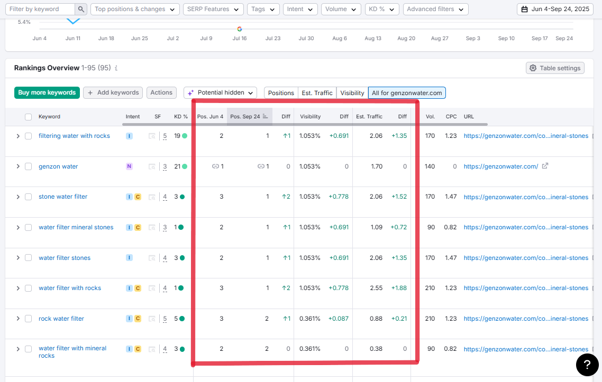
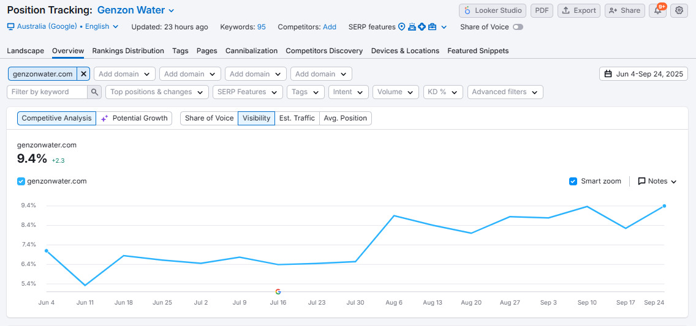

SEO Growth
for Genzon Water

TL;DR
Genzon Water improved its SEO performance by optimizing content and targeting high-intent keywords. As a result, multiple keywords moved to #1 positions, overall visibility increased from ~7% to 9.4% (+2.3),and organic traffic significantly grew. The site now holds strong page-one dominance and is positioned as a leading authority in the mineral water filtration niche.
SEO Performance Comparison (Before vs After Optimization)
| Metric | Before Optimization (Early June) | After Optimization (Late September) | Change |
|---|---|---|---|
| Overall Visibility | ~7.1% | 9.4% | +2.3 |
| Total Keywords Tracked | 95 | 95 | — |
| Top 3 Rankings | Limited (mostly #2–#5) | Majority in Top 1–2 | Significant improvement |
| #1 Rankings | Few / None | Multiple keywords at #1 | 🚀 Strong gain |
| Avg Keyword Position | ~2–3 range | 1–2 range | Improved |
| Estimated Traffic (per keyword avg.) | Low (~0.3 – 1.0) | Higher (~1.0 – 2.5) | +100%+ in some cases |
Overview
Genzon Water operates in a niche market focused on mineral stone-based water filtration. The goal was to improve search engine visibility, dominate high-intent keywords, and increase organic traffic in a competitive search landscape.
The Challenge
Genzon Water aimed to improve its organic visibility and keyword rankings within a competitive niche focused on mineral stone water filtration. Despite having relevant content, the website faced several core challenges:
Core Challenges
- Keyword Visibility: The site had limited presence on page 1 of Google for high-intent keywords.
- Keyword Position Fluctuation: Several important keywords were ranking between positions 2-5, missing out on top traffic opportunities.
- Competitive Niche Pressure: Competing against established domains in the water filtration space made it difficult to secure top rankings.
- Limited Organic Traffic Growth: Estimated traffic remained relatively low due to suboptimal keyword positioning.
- Underutilized Long-Tail Keywords: Variations like “water filter with rocks” and “stone water filter” were not fully capitalized.
The Solution
- Strategic Keyword Optimization
- On-Page SEO Enhancements
- Content Refinement & Expansion
- Technical SEO Improvements
To overcome the ranking, visibility, and traffic challenges, a focused and data-driven SEO strategy was implemented. The approach prioritized quick wins (pushing keywords to #1) while building long-term authority.
The Results
Following a targeted SEO strategy (content optimization, keyword targeting, and on-page improvements), significant improvements were achieved:
Keyword Ranking Improvements

Multiple high-intent keywords reached Position #1 on Google, including:
- “filtering water with rocks”(↑ from #2 to #1)
- “stone water filter”(↑ from #3 to #1)
- “water filter stones”(↑ from #2 to #1)
- “water filter with rocks”(↑ from #3 to #1)
Other keywords maintained strong positions within Top 1-2 rankings,strengthening SERP dominance.
Visibility Growth
- Overall SEO visibility increased to 9.4% (+2.3 growth) over the tracked period.
- Consistent upward trend observed from early June to late September, indicating sustained performance improvement.
Traffic Uplift
Estimated traffic saw noticeable gains:
- Some keywords increased traffic contribution by +1.35 to +1.88
- Improved rankings directly translated into higher click-through rates.
The Outcome
The SEO campaign delivered both immediate wins and long-term growth potential:

Key Wins
- 🥇 Multiple #1 rankings for core keywords
- 📊 Consistent visibility growth trend
- 📈 Increased organic traffic and engagement
- 🔍 Stronger search intent alignment
- 🏆 Improved competitive positioning